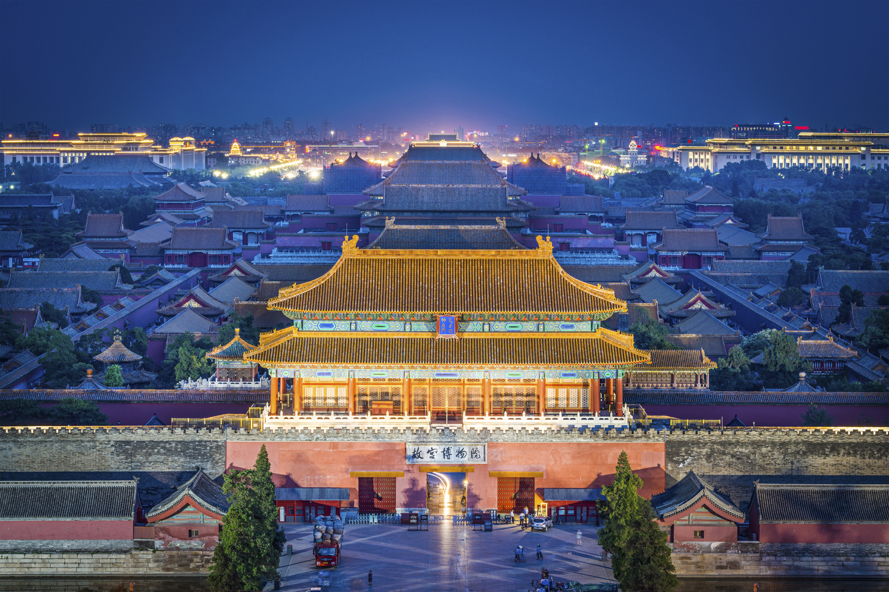

INFM600
My hometown----Beijing
I have grown up in Beijing, China, and it's really an beautiful and nice city. I lived in Xuanwu District there
when I was a little girl. I think I had a very happy childhood there. Before going to the elementary school, I already had
a lot of little friends to play with in our neighborhood. I remembered that we often had fun in a gardern near our houses.
The neignbors were really nice. Sometimes kids ate in others' home. I missed that time so much that I think I will treasure
those memory for the rest of my life. The followings are introductions of famous characteristics of Beijing.

The Forbidden City was the Chinese imperial palace from the Ming dynasty to the end of the Qing
dynasty—the years 1420 to 1912. It is in the center of Beijing, China, and now houses the Palace
Museum. It served as the home of emperors and their households as well as the ceremonial and
political center of Chinese government for almost 500 years. Constructed from 1406 to 1420,
the complex consists of 980 buildings[1] and covers 72 ha (over 180 acres). The palace complex
exemplifies traditional Chinese palatial architecture, and has influenced cultural and architectural
developments in East Asia and elsewhere. The Forbidden City was declared a World Heritage Site in 1987,
and is listed by UNESCO as the largest collection of preserved ancient wooden structures in the world.
 tamped earth, wood, and other materials, generally built along an
east-to-west line across the historical northern borders of China to
protect the Chinese states and empires against the raids and invasions
of the various nomadic groups of the Eurasian Steppe. Several walls
were being built as early as the 7th century BC;these, later joined
together and made bigger and stronger, are now collectively referred to
as the Great Wall. Especially famous is the wall built 220–206 BC by
Qin Shi Huang, the first Emperor of China. Little of that wall remains.
Since then, the Great Wall has been rebuilt, maintained, and enhanced;
the majority of the existing wall is from the Ming Dynasty (1368–1644).
The CCTV Headquarters is a 234-metre (768 ft), 44-story skyscraper on East
Third Ring Road, Guanghua Road in the Beijing Central Business District (CBD).
The tower serves as headquarters for China Central Television (CCTV) that was
formerly at the China Central Television Building located at 11 Fuxin Road some
15 km (9.3 mi) to the west. Groundbreaking took place on 1 June 2004 and the building's
facade was completed in January 2008. After the construction was delayed by a fire which
in February 2009 engulfed the adjacent Television Cultural Center, the headquarters was
completed in May 2012.The CCTV Headquarters won the 2013 Best Tall Building Worldwide
from the Council on Tall Buildings and Urban Habitat.
tamped earth, wood, and other materials, generally built along an
east-to-west line across the historical northern borders of China to
protect the Chinese states and empires against the raids and invasions
of the various nomadic groups of the Eurasian Steppe. Several walls
were being built as early as the 7th century BC;these, later joined
together and made bigger and stronger, are now collectively referred to
as the Great Wall. Especially famous is the wall built 220–206 BC by
Qin Shi Huang, the first Emperor of China. Little of that wall remains.
Since then, the Great Wall has been rebuilt, maintained, and enhanced;
the majority of the existing wall is from the Ming Dynasty (1368–1644).
The CCTV Headquarters is a 234-metre (768 ft), 44-story skyscraper on East
Third Ring Road, Guanghua Road in the Beijing Central Business District (CBD).
The tower serves as headquarters for China Central Television (CCTV) that was
formerly at the China Central Television Building located at 11 Fuxin Road some
15 km (9.3 mi) to the west. Groundbreaking took place on 1 June 2004 and the building's
facade was completed in January 2008. After the construction was delayed by a fire which
in February 2009 engulfed the adjacent Television Cultural Center, the headquarters was
completed in May 2012.The CCTV Headquarters won the 2013 Best Tall Building Worldwide
from the Council on Tall Buildings and Urban Habitat.